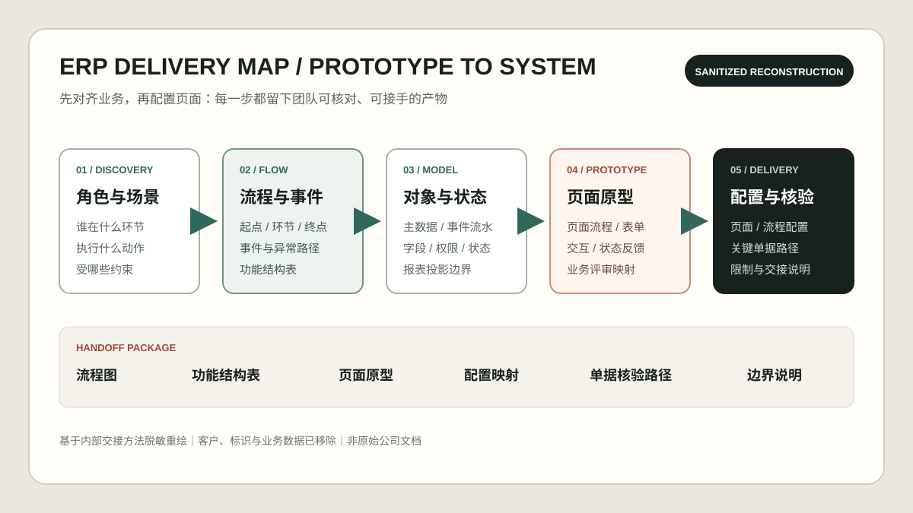

真实项目界面 · AI 辅助脱敏
真实项目界面 · AI 辅助脱敏

方案与原型映射 · AI 辅助脱敏重绘CASE 01 · ERP / 低代码业务系统
公司项目 · 脱敏可核对我的范围：业务流程、对象与字段、页面 / 流程配置、关键单据核验
养殖渔业 ERP：把业务口径收敛成可配置规则
面对基础资料、采购、库存、销售、养殖和设备流程，我先区分业务主体、事件流水与状态结果，再把规则落实到模块、字段、表单、状态和单据路径。
业务风险
业务口径分散，流程、字段、状态和单据之间缺少统一的核验路径。
我推动的动作
梳理角色与流程，抽象对象、字段和状态，配置页面与流程，并按关键单据路径组织核验。
关键判断
先用流程图、功能结构表和页面原型对齐角色、字段与状态，再配置 UI；将主数据、事件流水和状态 / 报表分层，避免功能堆砌。
协作边界
以对象 / 字段 / 状态表和关键单据路径对齐业务与实施；ERP 底座、生产数据环境与运维由团队提供。
可交接结果
形成业务与实施可共同配置、检查和继续维护的对象、字段、状态与关键单据核验口径。
核对方式
脱敏界面、流程 / 原型映射与职责说明；源码、客户数据和生产配置不公开。